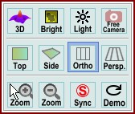

|
图像查看器相机
|
您可以使用图像查看器环形菜单打开这些功能。

3D模式：
打开或关闭3D显示模式。
仅当图像数据（非位图数据）用作3D-Z信息图像时才有效。
您可以通过从图像查看器拖放菜单中拖放从项目管理器中选择正确的选项，将另一个图像分配给图像查看器作为3D-Z信息图像。否则，当前图像既用作颜色信息也用作3D-Z信息。
此模式还会自动启用自由相机模式、相机侧视图和透视投影。
使用鼠标左键倾斜和旋转图像。转动滚轮缩放相机。按住 Shift 键并拖动图像进行平移。
亮度模式：
打开或关闭亮度显示模式。仅当浮点图像用作亮度信息图像时才有效。
您可以通过从图像查看器拖放菜单中拖放从项目管理器中选择正确的选项，将另一个图像分配给图像查看器作为亮度信息图像。
亮度模式意味着亮度信息图像将定义颜色的亮度，而彩色图像（+颜色表）或位图定义像素的颜色。
光照：
显示图像查看器光照对话框，用于渲染带有光照和反射的精美3D表面。
自由相机：
打开或关闭自由相机模式。
如果开启，您可以
如果关闭，您可以
顶视图：
切换到相机顶视图（关闭3D模式时自动执行）。
侧视图：
切换到相机侧视图（开启3D模式时自动执行）。
正交投影：
切换到正交相机投影（关闭3D模式时自动执行）。
透视投影
切换到透视相机投影（开启3D模式时自动执行）。
鼠标缩放：
打开鼠标缩放模式。如果选中鼠标缩放模式，您可以在图像中点击并拖动一个矩形，从而定义精确的像素缩放。仅显示所选范围的像素。
不要忘记通过激活鼠标移动模式来关闭此鼠标模式。
缩小：
缩小以查看所有图像像素（或在自由相机模式下将缩放以适应窗口）。
如果同步缩放模式已开启，所有图像查看器将缩小以查看所有图像像素。
同步缩放：
打开或关闭同步缩放模式；此模式对所有图像查看器都是相同的。开启时，像素缩放会将当前空间区域发送到所有其他查看器，这些查看器将使用相同的像素缩放。
演示：
让图像旋转用于演示目的。